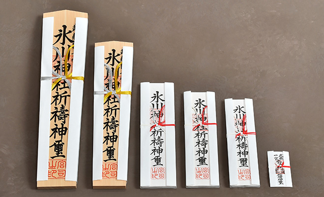

ご祈願・ご参拝
参拝時間
-
3月・4月・9月・10月午前5時30分 〜 午後5時30分
-
5月・6月・7月・8月午前5時 〜 午後6時
-
11月・12月・1月・2月午前6時 〜 午後5時
ご祈願について
人生儀礼の奉告や諸願成就を祈願する祈願祭を行っております。
受付は拝殿横の神札授与所にて承ります。正月、七五三特別態勢日は楼門内左手にて承ります。
当日、お越し頂きまして申込用紙に記入後、受付にお出し下さい。
尚、予約は出来ません。
ご祈願の時間
9時から16時まで30分毎に執り行います。15分前までには受付をお済ませ下さい。
混雑時は間を空けず随時行い、状況により人数制限がかかる場合があります。
ご祈願は祈祷殿で行い、所要時間は20分前後です。
正月時期は特別態勢となりますが、その他1月下旬の防火訓練中、8月1日の午前中（例祭の為）はご祈願をお断りしておりますのでご注意願います。
尚、交通安全祈願は8月2日午後、12月9、10日および31日午後、1月中旬過ぎまではご祈願のみで、お車自体のお祓いは行っておりません。
1月の日程はお正月のお知らせをご確認下さい。
ご祈願の初穂料
それぞれのご祈願の初穂料は5,000円からお納めいただいております。
申込用紙の初穂料の欄にチェックを入れ受付にてお納め願います。
金額により御神札の大きさなどが変わります。
-
特別大祈祷札 50,000円以上タテ58.0cm×ヨコ13.5cm
-
特別祈祷札 30,000円タテ48.5cm×ヨコ11.5cm
-
大祈祷札 10,000円タテ35.5cm×ヨコ10.0cm
-
中祈祷札 7,000円タテ32.5cm×ヨコ9.0cm
-
小祈祷札 5,000円タテ30.5cm×ヨコ8.5cm
-
交通大型札 5,000円からタテ13.5cm×ヨコ6.0cm（交通安全祈祷で車のお札をお選びの方）
※金額による大きさの違いはありません
それぞれのご祈願の初穂料は5,000円からお納めいただいております。
申込用紙の初穂料の欄にチェックを入れ受付にてお納め願います。
金額により御神札の大きさなどが変わります。
-
特別大祈祷札 50,000円以上タテ58.0cm×ヨコ13.5cm
-
特別祈祷札 30,000円タテ48.5cm×ヨコ11.5cm
-
大祈祷札 10,000円タテ35.5cm×ヨコ10.0cm
-
中祈祷札 7,000円タテ32.5cm×ヨコ9.0cm
-
小祈祷札 5,000円タテ30.5cm×ヨコ8.5cm
-
交通大型札 5,000円からタテ13.5cm×ヨコ6.0cm（交通安全祈祷で車のお札をお選びの方）
※金額による大きさの違いはありません
各種祈願一覧
個人のご祈願願種
| 家内安全 | 身上安全 | 身体健康 |
| 無病息災 | 病気平癒 | 神恩感謝 |
| 商売繁昌 | 開運招福 | 厄除 |
| 方位除 | 八方除 | 災難除 |
| 方災除 | 心願成就 | 大願成就 |
| 就職祈願 | 安産祈願 | 子授祈願 |
| 良縁祈願 | 七五三詣 | 誕生祝 |
| 成人祝 | 還暦祝 | 合格祈願 |
| 国家安泰 | 十三詣 | 虫封じ |
| 必勝祈願 | 旅行安全 | 目標達成 |
| 学業成就 | 報賽 | 交通安全 |
| 結婚奉告 | 初宮詣 | など |
- 「交通安全」はお札の種類を車内用の御神札かご自宅の神棚用の御神札かどちらかお選び頂きます。
- 「結婚奉告」はお二人のお名前でお申し込み下さい。
- 「初宮詣」はご両親様とお子様のお名前でお申し込み下さい。
| 個人のご祈願願種 | |||||
|---|---|---|---|---|---|
| 家内安全 | 身上安全 | 身体健康 | 無病息災 | 病気平癒 | 神恩感謝 |
| 商売繁昌 | 開運招福 | 厄除 | 方位除 | 八方除 | 災難除 |
| 方災除 | 心願成就 | 大願成就 | 就職祈願 | 安産祈願 | 子授祈願 |
| 良縁祈願 | 七五三詣 | 誕生祝 | 成人祝 | 還暦祝 | 合格祈願 |
| 国家安泰 | 十三詣 | 虫封じ | 必勝祈願 | 旅行安全 | 目標達成 |
| 学業成就 | 報賽 | 交通安全 | 結婚奉告 | 初宮詣 | など |
- 「交通安全」はお札の種類を車内用の御神札かご自宅の神棚用の御神札かどちらかお選び頂きます。
- 「結婚奉告」はお二人のお名前でお申し込み下さい。
- 「初宮詣」はご両親様とお子様のお名前でお申し込み下さい。
会社・団体のご祈願願種
| 商売繁昌 | 社運隆昌 | 職場安全 |
| 営業繁栄 | 事業繁栄 | 安全祈願 |
| 無事故祈願 | 無事故無災害 | 工場安全 |
| 作業安全 | 業績向上 | 目標達成 |
| 工事安全 | 交通安全 |
- 「工事安全」は工事名称がある場合はご記入
下さい。 - 「交通安全」はお札の種類を車内用の御神札か会社の神棚用の御神札かどちらかお選び頂きます。
| 会社・団体のご祈願願種 | |||||
|---|---|---|---|---|---|
| 商売繁昌 | 社運隆昌 | 職場安全 | 営業繁栄 | 事業繁栄 | 安全祈願 |
| 無事故祈願 | 無事故無災害 | 工場安全 | 作業安全 | 業績向上 | 目標達成 |
| 工事安全 | 交通安全 | ||||
- 「工事安全」は工事名称がある場合はご記入
下さい。 - 「交通安全」はお札の種類を車内用の御神札か会社の神棚用の御神札かどちらかお選び頂きます。
御神札のお祀りの仕方
家内安全等の御祈祷札は大きいため、宮形の外にお祀りします。
一年間お祀りした御神札は神社にお納め下さい。
神棚のない家庭では南か東向きで、目線より高い所にお祀りします。
一社造の宮形では手前から神宮大麻、氏神様の御神札、崇敬神社の
御神札の順に重ねてお祀りします。
三社造の宮形では正面に神宮大麻、向かって右に氏神様、左に崇敬
神社の御神札をお祀りします。
神棚のお祓い
宮形は受付にお出し下さい。氷川神社の御神札を納め、御祈祷終了後お渡しいたします。
人生儀礼のご祈願
初宮詣（お宮参り）
七五三
（袴着、はかまぎ）、3歳（髪置、かみおき）の年祝でこれまでの成長の感謝と今後の無事を祈願します。11月15日に行われるのは天和元年（1681）に5代将軍徳川綱吉の子、徳松の髪置祝いが行われた事に由来します。氷川神社では9月1日より12月中旬頃まで七五三のご祈願を受けた方に千歳飴などの記念品を授与しております（無くなり次第終了）。それ以外の時期では一般のご祈願と同じ授与品をお渡ししております。
尚千歳飴のみの有料授与は行っておりません。
入学・卒業の奉告
成人式
今では20歳になった男女が大人として社会に認められ、成人の日に祝福の上、義務と権利を与えられ誓いを新たにします。無事に大人の仲間入りが出来た事を氏神様に奉告しましょう。
結婚式
もともと結婚の儀は各家庭の床の間に御神名の書かれた掛軸などをかけ、その前にお供え物を捧げ御神酒の盃を交わす形で行われてきました。現在の様な神前結婚式は明治33年5月10日の皇室婚嫁令により当時の皇太子であられた大正天皇が九条節子姫（貞明皇后）と宮中の賢所（けんしょ。かしこどころ。三種の神器の一つの八咫鏡の写しの宝鏡が鎮まる）の大前において執り行われた御婚儀を契機とし、全国各地に普及しました。
長寿のお祝い
| 還暦（61歳） | 61年目に再び自分の生まれた年の干支に戻る事から。 |
|---|---|
| 古希（70歳） | 唐の詩人、杜甫の詩の「人生七十古来稀なり」から。 |
| 喜寿（77歳） | 喜の草書体が七十七と読める事から。 |
| 傘寿（80歳） | 傘の俗字が八十と読める事 から。 |
| 米寿（88歳） | 米の字が八十八に分けられる事から。 |
| 卒寿（90歳） | 卒の俗字が九十と読める事 から。 |
| 白寿（99歳） | 百から一を取ると白になる事から。 |
| 上寿（100歳） | 60歳の下寿、80歳の中寿に 対するもの。 |